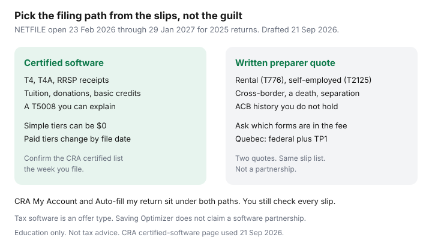

Personal Finance · Canada
Tax Software vs Accountant in Canada: A Cost Framework for Middle-Aged Households
Middle-aged households overpay in two directions. A straightforward T4 couple buys a full-service appointment because April feels moral. A household with a rental suite and a side contract buys the cheapest software at 11 p.m. on deadline day and hopes the interview screens were enough. The cheaper path is the one that matches the slips. CRA’s NETFILE window for initial 2018 through 2025 returns, including the 2025 return, runs from Monday 23 February 2026 at 6:00 a.m. Eastern until Friday 29 January 2027. ReFILE for amended returns covers 2022 through 2025 in that same notice. Price the work before that window, not inside it.
Disclosure: Tax software is an offer type. Saving Optimizer may later add partner links. We do not currently claim a software or accounting-firm partnership, and this page is not a ranking of products. Education only — not tax, legal, or filing advice. A certified product still needs your numbers.
Key takeaways
- Software is the default when the year is T4s, RRSP receipts, tuition, donations, and credits you can read. Several CRA-certified options are free or free for a simple situation.
- Pay a preparer when the file includes rental, self-employment, cross-border issues, a death, or a separation. Get the forms named in a written quote.
- The true cost includes amendment risk. A missed credit can dwarf a software fee. A wrong rental expense can dwarf a preparer fee.
- CRA My Account and Auto-fill my return shorten both paths. They do not check the return for you.
- Québec files two returns. Certification has to cover Revenu Québec as well as NETFILE.
When NETFILE software is enough: T4s, RRSP, tuition transfers, straightforward credits
Employment income, a pension slip, RRSP contributions including the first 60 days, FHSA contributions you already tracked, tuition from a T2202, charitable donations, medical expenses you added up, and union dues are the core of a software year. A T5008 from a discount brokerage is still software territory if you know the adjusted cost base. If you do not, the missing ACB is the reason to slow down, not a reason to click through.
CRA’s certified-software table for the 2025 tax year, reviewed 21 Sep 2026, lists providers with different price labels: some “Free,” some “Paid” with free offerings based on the tax situation, some “Free” with optional paid services. Wealthsimple Tax is listed as free with optional paid services, and the company’s own page says filing options start at $0 and that the product is CRA- and Revenu Québec-certified for tax years 2023–2025. TurboTax is listed as paid with free offerings based on situation; its own page says simple personal returns can be filed for $0 and that the free edition does not include every form, so a more complicated file pushes you to a paid edition whose price can change with the day you file. Use the CRA list, then the provider page, the week you transmit. A blog’s “about $50” tier from last June is not a quote.

When a preparer pays for itself: rental, self-employment, cross-border, complex credits
Hire when a wrong box is expensive and you will not notice it. Typical triggers for a middle-aged household:
- Rental income and expenses (T776), especially a suite in the home you also live in, where personal-use splits and capital cost allowance are easy to get wrong.
- Self-employment (T2125) with GST/HST, a vehicle, or a home office.
- A move between provinces, a separation year, or a death return.
- U.S. person status, cross-border employment, or foreign property reporting you do not already understand. That is a specialist file, not a deluxe software toggle.
- A first-time disability tax credit claim, or capital gains where the adjusted cost base lives in a shoebox from 2014.
Ask two preparers for a written quote that lists forms: T1, TP1 if you are in Québec, T776, T2125, and who chases missing slips. A quote that says “personal return, starting at” without forms is a T4 price wearing a rental file. Invoices vary widely by city and by how complete your folder is. This page will not invent a national average fee. The comparison that matters is those two written quotes against the software price for the same slip list, plus the hours you would spend.
True cost: software fees, accountant fees, and error or amendment risk
| Piece | What to record |
|---|---|
| Software | The edition that includes your forms, on the day you will file. Simple paths can be $0. Paid editions change. |
| Preparer | Written quote with forms. Ask what a missing slip or an amendment costs later. |
| Your hours | A Saturday is a cost if you bill your own time honestly. It is also cheaper than a wrong CCA claim. |
| Errors | ReFILE can amend some recent returns. A missed donation or tuition transfer can exceed a software fee. A disallowed rental expense can exceed a preparer fee. |
| Québec | Two transmissions. Software must be certified for both, or the quote must say the preparer files both. |
CRA My Account setup that lowers both DIY and preparer time
Register before you need a receipt. Auto-fill my return, inside certified software, pulls slips and some carry-forward amounts CRA already holds. You still add anything CRA does not have, and you still read the result. Direct deposit is how a refund skips a mailed cheque. Online mail is how a review letter does not sit in a pile. The click-path, including the fact that GCKey does not sign you into a CRA account, is Set up CRA My Account. A preparer should get access through Represent a Client, which you can revoke. They should not get your Sign-In Partner password.
Couple filing: who should sit with the preparer
If one spouse has the rental or the business and the other has a T4 and an RRSP slip, buy the preparer’s hour for the complicated return and let the T4 spouse file in software — inside the same coupled file if you are pension-splitting or transferring tuition. Spousal RRSP contributions change whose receipt is whose deduction; bring both NOAs. The person who knows where the donation receipts are should be in the room even if their own return is simple. Handing a box of paper to a preparer in April is how the quote grows.
Year-round document folder so April is cheaper
One folder, digital is fine, with the year on it. Add slips when they arrive instead of reconstructing March:
- February: T4, T4A, T5, T3, RRSP and FHSA receipts for the first 60 days (the 2025 first-60-days deadline was 2 March 2026; the 2026 tax year uses the first 60 days of 2027 — re-check CRA’s date page each January).
- All year: charitable receipts, medical, childcare, and moving costs if a move was for work.
- Rental or business: a monthly total, not a grocery bag of receipts on 28 April.
- January: download the NOA and the RRSP deduction limit. The 2026 dollar ceiling is $33,810. Your room is the NOA number.
A complete folder is what makes a software year stay a software year, and what keeps a preparer quote from becoming an archaeology project.
Sources & date stamps
- CRA, Find certified tax software — NETFILE and ReFILE transmission window 23 February 2026, 6:00 a.m. Eastern, through 29 January 2027; 2025 certified list including Wealthsimple Tax and TurboTax price labels (used 21 Sep 2026).
- CRA, Auto-fill my return — requires a CRA account; provincial-partner sign-in does not work with the service; you remain responsible for the return (used 21 Sep 2026).
- Wealthsimple Tax public page — options start at $0; states CRA and Revenu Québec certification for 2023–2025 (used 21 Sep 2026).
- TurboTax public pages — simple personal returns at $0; free edition does not include every form; paid prices can change by file date; 2025 products described as NETFILE certified (used 21 Sep 2026).
- CRA RRSP limits — 2026 dollar limit $33,810 as a ceiling; personal room is on the NOA.
Frequently asked questions
Can I file a simple T4 return for free in Canada?
Often, yes. CRA's certified-software list for 2025 returns, reviewed 21 Sep 2026, includes providers marked free or free depending on the tax situation, and providers with optional paid services. TurboTax's own page says a simple personal return can be filed for $0 and that paid editions exist because the free edition does not include every form. Confirm the price the week you file. It moves.
When is a preparer worth the invoice?
When the return has rental income, self-employment with GST/HST, a cross-border filing, a death, a separation year, or capital-gains history you cannot reconstruct. Ask for a written quote that names the forms. A T4 quote and a T776 quote are different products.
Does Auto-fill my return replace checking the slips?
No. Auto-fill inserts what CRA has on file on the day you ask. A missing T4, a charitable receipt, or rental income you must report yourself will not magically appear. You still read the return before you NETFILE.
We are a couple. Do we both need to sit with the preparer?
The person with the complicated slips should. The other spouse can often file in the same software file or on a simple NETFILE path. Pension splitting, spousal RRSPs, and tuition transfers need both returns in view. Share access through Represent a Client, not by handing over a banking password.
What about Quebec?
You file a federal return and a Quebec return. Use software certified for both CRA NETFILE and Revenu Quebec, or a preparer who will say so in the quote. CRA My Account does not replace Revenu Quebec's own file.